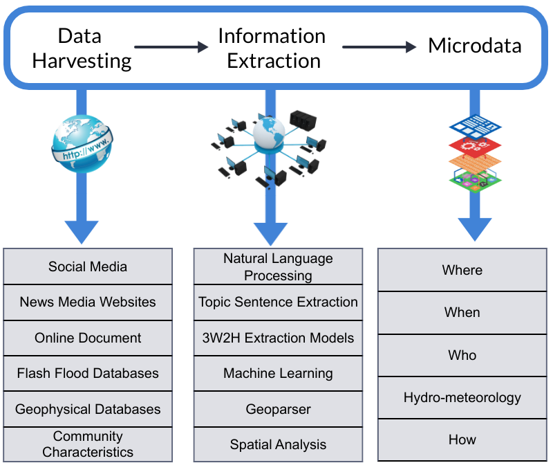
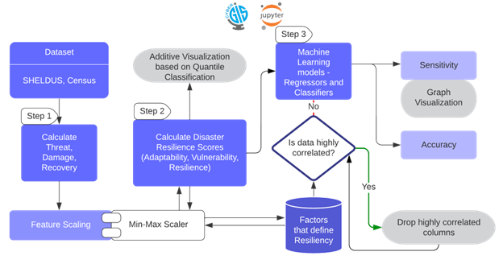
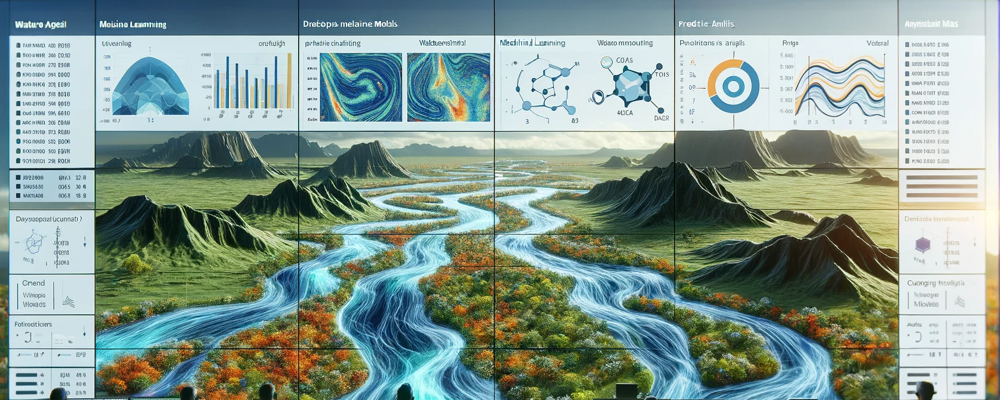

Selected Projects
In my latest research, I've been diving into how we can better handle climate change-induced disasters, especially flash floods, using data-driven techniques. This contribution includes developing information retrieval systems, assessing community resilience, and constructing predictive models. These methods are based on strong theories, making our decision-making process in disaster management smarter and more resilient.
1. AI-assisted web information harvesting for past flash flood events
In our recent project, we've developed a system designed to enhance our understanding of historical flash flood events in the United States. This system integrates Natural Language Processing (NLP) and Machine Learning algorithms, aiming to refine the process of information retrieval. Our focus has been on improving efficiency, accuracy, and user-friendliness. We believe these tools could significantly contribute to the way flood data is managed and utilized.
The system also stands out as a specialized tool for delving into natural disaster data. It demonstrates a significant improvement in performance, with a 63% increase in efficiency compared to standard search engines. This enhancement is not just about faster data retrieval; it deepens our insight into disaster patterns and trends. By doing so, it opens up new avenues for more proactive and creative methods in disaster risk management and reduction.
This effort is proudly supported by the National Science Foundation.
2. Digital Twin for real-time predictive flood inundation mapping for the city of Galveston, Texas
In the realm of flood management, traditional practices have predominantly relied on reactive inundation mapping, focusing on post-event analysis or simulations of hypothetical flood scenarios. Our project introduces a notable shift towards predictive inundation mapping, leveraging advanced forecasting techniques. This method goes beyond standard mapping practices, employing sophisticated algorithms to anticipate flood extents. By accurately predicting potential flood areas, our approach enables a more strategic allocation of resources. It equips first responders with actionable insights, supports the development of more effective evacuation plans, and allows for the implementation of preemptive measures. These efforts are aimed at significantly reducing the potential impact of floods, representing a proactive stride in enhancing flood preparedness and management strategies.
Central to our innovation is the creation of a digital twin for Galveston, Texas. This model thoughtfully integrates dynamic environmental elements, such as expected rainfall and wind conditions, with more constant urban factors like land use and the storm sewer network. This integration produces inundation maps that are both accurate and timely, offering valuable insights into potential flood scenarios. These maps serve as a useful tool for the city, helping in the preparation and management of potential flood events. This approach aims to improve the city's ability to respond to floods, focusing on enhancing the safety and resilience of its communities in a practical and effective way.
3. Platform for Resilience Inference Measurement and Enhancement
This project has led to the creation of an innovative platform that applies machine learning to develop a scientifically validated index for assessing community resilience against disasters. This tool distinguishes itself by including socio-economic factors, thereby overcoming the subjective biases and empirical constraints often found in traditional resilience indices. It represents a blend of scientific rigor and practical application, aimed at providing a more nuanced and comprehensive understanding of a community's capacity to withstand and recover from adverse situations.
Hosted on the CyberGISx platform, this tool offers a data-centric method for evaluating resilience. Users can focus on particular areas, and the platform will compute the resilience indices, taking into account key socio-economic aspects. This functionality aids in precise risk evaluation and helps tailor resilience strategies more effectively. It's about setting new standards in disaster preparedness and planning. By providing these insights, we're equipping communities with better tools to handle disasters, moving us all a step closer to a more resilient future.
4. GIS Tool for Dynamic Assessment of Community Flash Flood Susceptibility
In the United States, flash floods are a major concern, often leading to fatalities due to their sudden onset and localized impact. Addressing the unique challenges posed by these floods, our research concentrates on their rapid development and region-specific characteristics. We have developed a GIS-based tool, which integrates sophisticated machine learning techniques. This tool is designed to meticulously analyze the diverse factors contributing to flash floods in different areas, enhancing our understanding and response to these unpredictable events.
Our tool extends beyond conventional data analysis; it provides a customized evaluation of community vulnerability to flash floods, taking into account the unique attributes of each region. This tool not only advances the methodology in flash flood prediction but also transforms the landscape of community preparedness. Our project is more than just a technological achievement; it's an important step towards helping communities strengthen their resilience and significantly reduce the risks associated with unpredictable and often devastating natural disasters.
5. Watershed Flood Modeling using Machine Learning
In this project, we advanced watershed flood modeling through the application of various machine learning techniques. Our objective was both ambitious and well-defined: to construct accurate models capable of predicting flood susceptibility in watershed regions. This initiative went beyond technological innovation; it represented a strategic effort to gain a deeper and more effective understanding of flood dynamics than had previously been possible.
Central to our progress is the development of detailed susceptibility maps. These maps are essential because they help identify high-risk areas within watersheds, enabling us to take targeted flood mitigation actions promptly. By providing predictive insights, our work becomes a valuable tool for making quick, preventive decisions when flood threats are looming. This proactive approach plays a crucial role in enhancing community resilience and protecting against the potentially devastating impacts of floods.